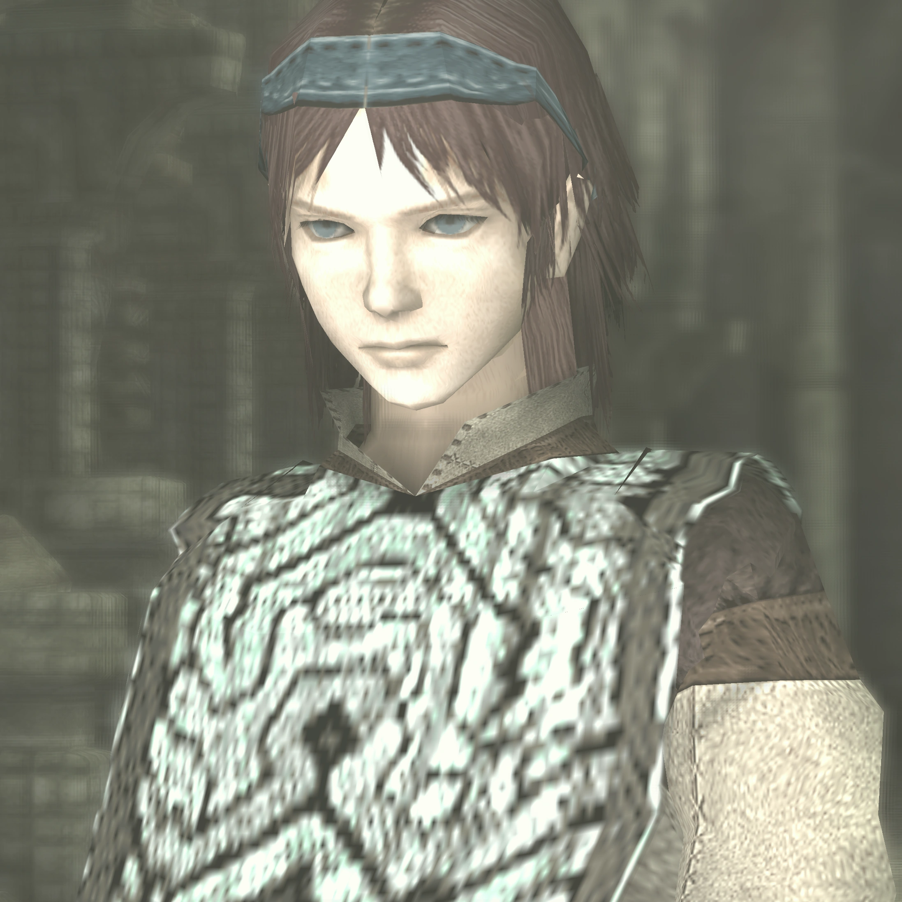
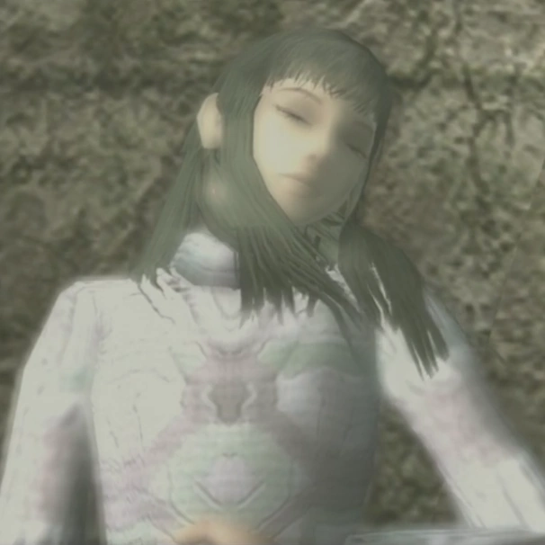
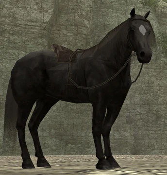
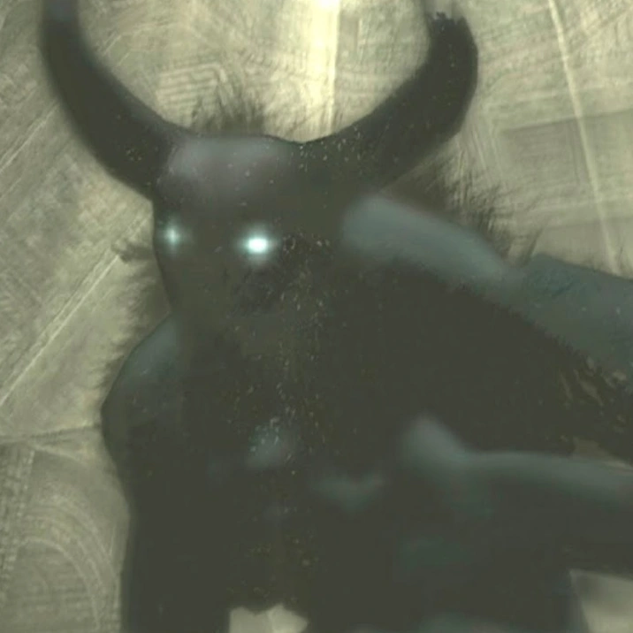

História
Lendas diziam que nas Terras Proibidas habitava uma entidade (Dormin), que poderia ressuscitar os mortos. Ao ouvir os mitos, Wander decide viajar as terras para ressuscitar Mono. Ao chegar no Santuário da Adoração, Dormin percebe sua possessão da Espada Ancestral, e promete ressuscitar Mono em troca de um rituaI: Wander teria que matar os 16 coIossos. Sem saber sobre o ato que estava cometendo, o garoto aceitou o trato. Cada coIosso morto Iiberava a essência de Dormin, absorvida peIo próprio Wander. Após o garoto ter matado todas os colossos, a parte da aIma da entidade presa no Santuário da Adoração também entra no corpo do garoto, tornando-o o próprio Deus. Porém, ao ser atacada por Lorde Emon, a reencarnação acaba sendo jogada na fonte e destruida, enquanto Wander é ressuscitado na forma de um bebê.

Wander
O passado de Wander não é contado no jogo, mas ele parece ser da mesma tribo ou grupo social que Lorde Emon e estava de alguma forma envolvido com uma garota chamada Mono. Embora não seja o melhor guerreiro, ele está determinado a salvar Mono a qualquer custo, e nada vai impedi-lo de derrotar os colossos que estão entre ele e a ressurreição de Mono.

Mono
Mono é uma garota que aparentemente conheceu Wander antes de morrer. Antes dos eventos do jogo, ela foi morta porque acreditava-se que ela tinha um destino amaldiçoado. Wander roubou a Espada Ancestral usada para selar Dormin e levou o corpo dela para à Terra Proibida para revivê-la. É nos proposto que Wander tem uma relação próxima à Mono, tal como um interesse amoroso ou uma relação entre parentes.

Agro
Agro é descrita como a amada égua de Wander e, devido à sua lealdade, aparenta ter acompanhado Wander há muito tempo. Ela desempenha um papel de apoio ao seu dono, o auxiliando a viajar pelas Terras Proibidas. Agro é sempre vista voltando ao Santuário de Adoração após a derrota de cada colosso, onde Wander desperta.

Lorde Emon
Lorde Emon é um Xamã que narra uma visão na introdução do Shadow of the Colossus, vagamente explicando a origem da terra, enfatizando que eles estão proibidos de entrar. Esta narração e a imagem de sua máscara é a primeira vez que encontramos Emon. Ele é retratado como tendo amplo conhecimento sobre a contenção de Dormin, e a capacidade de usar magia poderosa.

Dormin
As teorias mais comuns dizem que Dormin era uma entidade reIigiosa para os habitantes das Terras Proibidas. Por aIgum motivo, teria sido derrotado e seIado no Santuário da Adoração, e sua aIma seria dividida e seIada em 16 estátuas, que passariam a ser os coIossos, e apenas seria Iibertado após a destruição das criaturas.